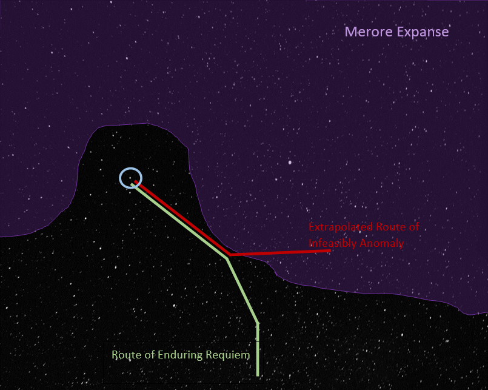
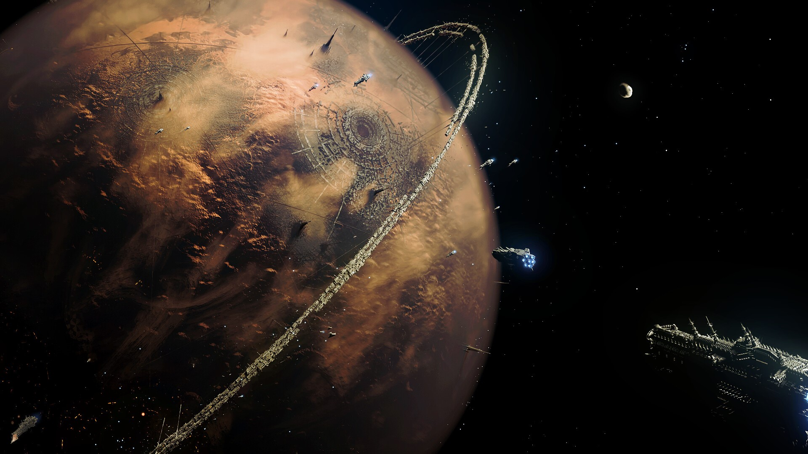
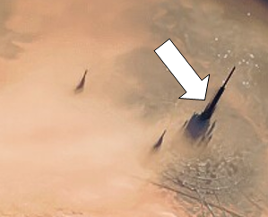
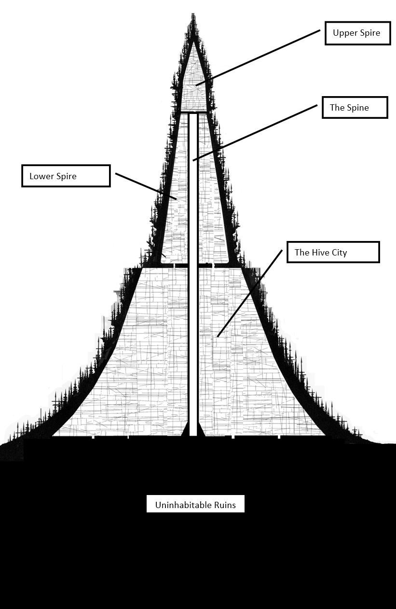
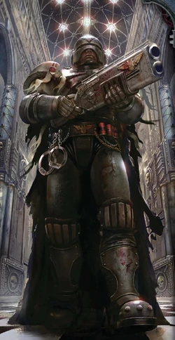

20,000 years ago, in the Dark Age of Technology mankind in its hubris stood at the pinnacle of its scientific achievement.
Man had spread throughout the galaxy and lived decadent, hedonistic, lives of leisure.
They thought themselves unassailable.
But their unhallowed machines; their Men of Stone and Men of Iron, brought them low and rained destruction upon the galaxy.
The tatters of their heretical society were further fragmented and torn by the rise of the Warp; stirred up by Xenos heresy.
Only Aeons later was the Emperor’s light able to shine across the galaxy from Holy Terra, unifying humanity once more in His holy embrace.
You
You are an Inquisitorial acolyte in the retinue of Inquisitor Ordela Thassovyon. You recently arrived in the Gacromos System aboard the Ecclesiarchy vessel Enduring Requiem. For the last few weeks you’ve been pursuing a heretic vessel the Infeasible Anomaly. In a presumed attempt to spread their heresy more widely the Infeasible Anomaly has been dropping personnel thoughout the sector. To counteract this, Inquisitor Ordela has ordered teams deployed to the affected systems the Enduring Requiem has passed through. In this system it’s your duty to descend to the planet, root out the heresy and bring the hereteks the swift justice of the Emperor!
Timeline
- 234.110.M42
- Taulk Daedasninich begins a crusade to locate a rumoured Standard Template Construct Database in the Merore Expanse, an area ravaged by Warp storms that have recently abated enough to allow Warp travel.
- 116.119.M42
- Astropath Jethro Hargel sacrifices himself to pierce the storms surrounding the Merore Expanse; warning the Imperium of the betrayal of the Heretek Taulk Daedasninich and the crew of the Infeasible Anomaly.
- 118.119.M42
- The closest imperial vessel, the Enduring Requiem, with Ordo Hereticus Inquisitor Ordela Thassovyon aboard plots a course to intercept the last known position of the vessel.
- 119.119.M42 – 133.119.M42
- Over the next weeks the Infeasible Anomaly stops at many star systems along the edge of the Merore Expanse, in each case dropping off personnel. The Inquisitor attempts to intercept by dispatching parts of her retinue to each affected world. Despite tricky navigation caused by the Warp disturbances at the edge of the expanse, the Enduring Requiem closes the gap between the two vessels from weeks to days.
- 134.119.M42
- The Infeasible Anomaly arrives at the Gacromos system.
- 134.119.M42
- Now in range despite the Warp turbulence, the Astropath of the Enduring Requiem telepathically warns Gacromos’s Governor of the approach of the Heretek vessel and by Inquisitorial authority Orders him to shut down all intercity transportation planetwide.
- 134.119.M42
- The Infeasible Anomaly leaves the Gacromos System.
- 137.119.M42
- The Enduring Requiem arrives at the Gacromos system.
Umbra Graarn
Your immediate superior in the Inquisitorial hierarchy. Umbra Graarn is a Throne Agent who serves in the cadre of the Inquisitor Ordela Thassovyon. Umbra has made planetfall with you and is your commander in the field.
Umbra was selected for this mission because she is native to Gacromos Major.
Gacromos System
It’s proximity to the Merore Expanse, has left the system relatively sheltered from external threats and the relative abundance of its resources has seen it become an important manufacturing hub within the sector.
Due to the interference from the storm wall, astropathic communications with the greater Imperium are more difficult than normal. During bad periods communications may stopped entirely for months at a time.
Gacromos Major
The Refounding
After the Age of Strife, Gacromos was resettled during the latter part of the Great Crusade. Detail of the events surrounding the refounding are sparse but it’s clear that the rediscovered planetary population was found unredeemable, Exterminatus was declared, and the planet was Virus Bombed.
From 234.M31 – 264.M31 the planetary biosphere was restored by the Adeptus Mechanicus and the world was resettled.
Addendum by Themanx-Delta-1, Tech-Adept of the Ordo Hereticus Administratum
It is likely that the abundance of metals in the asteroid belts both in system and in the neighbouring systems lead to this expenditure of resources.
Addendum by Causs-Larsal, Tech-Adept of the Ordo Hereticus Administratum
No doubt the similarity of its surface gravity and rotational period to Holy Terra was also a factor.
The Scourge
From 86.M35 – 94.M35 the planet was embroiled in civil war stemming from the rise of a Khornate Cult. The war and resultant pacification lead to tens of billions of deaths and the destruction of entire hive cities.
The Ruined Rings
Orbiting at 7.644km/s 450km above the planet’s surface is an artificial structure predating imperial records. The structure is fragmented and has been picked clean over the aeons leaving only vacuum ablated solid state substructure. The Mechanicus has deemed the structure is inert and the significant effort required to remove it safely would be a waste of resources.
Addendum by Themanx-Delta-1, Tech-Adept of the Ordo Hereticus Administratum
Although the artist has seen fit to furnish the ring with tendrils appearing to touch down on the planet’s surface I have corresponded with the local Mechanicus office and can confirm that this is merely an affectation. I have also confirmed that the structure doesn’t have a centre of mass above geostationary orbit; It was never an elevator.
Addendum by Causs-Larsal, Tech-Adept of the Ordo Hereticus Administratum
Did your enquiries uncover what material this structure is made from? We should include this if we have it.
Addendum by Themanx-Delta-1, Tech-Adept of the Ordo Hereticus Administratum
I requested the whole report including what lead them to conclude that the structure is inert. They seem to be having trouble locating it.
Addendum by Causs-Larsal, Tech-Adept of the Ordo Hereticus Administratum
Typical of a Hive Office to have a lax attitude to record keeping.
Surface Conditions
The atmosphere is thinner than that of Holy Terra and Millennia of heavy industry have degrade the biosphere and filled the atmosphere with pollutants.
An unaugmented human is unlikely to be able to survive for long unprotected outside of the city.
Omnicar Hive City
A hive city or simply a hive, is a massive arcology, or fully self-contained city, that is home to millions or even billions of Human beings loyal to the Imperium of Man. Hive cities are often found in clusters on the densely populated urban planets known in the official Imperial lexicon as Hive Worlds.
Hive cities have been built up over thousands of Terran years, in many cases stretching back into the Age of Technology long before the founding of the Imperium.
Hive cities are layered constructions of rockcrete and adamantium, comprising thousands of residential and industrial blocks leveraged one atop the other, forming a massive, man-made mountain usually capped by a crown of great spires that stretch thousands of metres into the sky.
Omnicar was founded in 256.M35. After nearly 7 millenia it stands 100km high with a base 30km across. Omnicar is one of the larger cities on Gacromos and is home to the imperial family of the planetary govenor. It had a declared population of 16,126,842,288 with a population density of 985,600 per cubic kilometer at the last imperial census in 981.M41.
Addendum by Themanx-Delta-1, Tech-Adept of the Ordo Hereticus Administratum
Unihabitable Ruins!? Do they think our cogitator implants are malfunctioning?
Addendum by Causs-Larsal, Tech-Adept of the Ordo Hereticus Administratum
Indeed brother, it does seem to be an obvious untruth.
The Spine
A kilometer diameter cyclindrical conduit that runs from ground level to the upper spire. It’s used to rapidly convey material, goods and passengers up and down the spire.
The spine was the only part of the original hive city remaining after the orbital bombardment that heralded the end of The Scourge.
Addendum by Causs-Larsal, Tech-Adept of the Ordo Hereticus Administratum
From reading the account of The Scourge it seems that this world was fortunatunate to avoid a second Exterminatus.
Omnicar Society
Noble Houses
Highborn exist on nearly all worlds in the Imperium, from the towering spires of its hive cities to the stone forts and caves of its feral kingdoms. They are the privileged and powerful of their worlds; those fit for governance not by the will of the people but by the providence of their birthright.
While their powers and purview might differ from world to world, their function remains the same: To lead their people and control the resources and political might of their planet. Most Highborn grow up being groomed for this power, taught to govern justly by fair and even-handed peers or, more likely, instilled with a disregard for those below and ingratitude for the influence and position they have been given.
Here they are content to shield themselves in the trappings of wealth and privilege, while focusing on the real threat to their existence or to that of their family: Other Highborn.
Guilds
Huge families granted, by imperial charter, a monopoly over a particular aspect of commerce or enterprise. The conditions in which a guilder lives and the power the family wields depends on the charter they have with the more potent guilds rivaling minor noble houses in power.
Rates the guild can charge are set by the governor.
Imperial Citizens
The vast majority of the billions of people inhabiting Omnicar toil in the refineries or manufactories. They work long hours and live in cramped conditions. Most never leave their part of the hive structure. They are kept in line by the preaching of the Adeptus Ministorum and the boot of the Adeptus Arbites.
Dregs
Those outside of imperial society. Mutants, cultists and criminal scum. Typically the broken warrens below the surface level of a hive city crawl with this type of villany. Some are just trying to live. Some would try to eat you.
Imperial Government
Adeptus Arbites
The Adeptus Arbites is the adepta of the Adeptus Terra that serves as the galactic police force of the Imperium of Man, responsible for enforcing Imperial Law (the Lex Imperialis) on all Imperial-controlled worlds. The Adeptus Arbites have been granted the right by the High Lords of Terra to serve as judge, jury and executioner for any Imperial citizen they discover having broken Imperial Law. Unfortunately for many Imperial citizens, the concept of due process is not one that generally applies in the Imperium.
However, in those cases where Imperial Law is unclear or the law breaker has committed a truly heinous deed or is of unusually high-ranking stature, the offended will be taken back to an Arbites Precinct House for judgement by an Arbites Judge, the sentence to be carried out immediately. Imperial justice is swift and sure, but not always just.
Adeptus Administratum
The Adeptus Administratum, often referred to simply as the Administratum, is the administrative and bureaucratic division of the Adeptus Terra, the heart of the gigantic bureaucracy that controls the government of the Imperium of Man, consisting of untold billions of clerks, scribes and administrative staff constantly working to manage the Imperium at every level, from assembling war fleets to levying taxes.
Adeptus Ministorum
The Adeptus Ministorum, more commonly known as the Ecclesiarchy, is the official state church of the Imperium of Man, which maintains and promotes the worship of the Emperor of Mankind as the one, true God of Humanity.
Adeptus Astra Telepathica
The Adeptus Astra Telepathica is an adepta of the Adeptus Terra responsible for the recruitment and training of Sanctioned Psykers in the service of the Imperium of Man.
Adeptus Mechanicus
The Adeptus Mechanicus is the official Imperial name within the Adeptus Terra for the Cult Mechanicus or Cult of the Machine based on Mars which provides the Imperium with its scientists, engineers and technicians.
The Tech-Adepts of the Mechanicus are the primary keepers of what is viewed as sacred wisdom, a privileged caste of Tech-Priests who jealously guard the knowledge required to maintain and construct much of the Imperium’s advanced technology.
Notable Noble Houses
- Imperial House Octus
- The house of the Planetary Governor and the governor of Omnicar. The upper spire of Omnicar is soley inhabited by the imperial family.
- House Soddenmere
- A main rival of house Graarn.
- House Graarn
- The house of Umbra Graarn.
Notable Guilds
- The Esteemed Society of Conveyors
- Monopoly over shuttle services, transportation and hauling within the system.
- Mercator Sanguis
- Traders in slaves and indebtured servants system wide.
- Omnicar Manufacturers Association
- Manufactorum owners and administrators.
- Efluvia Removal Network
- Sewerage infrastructure.
- Omnicar Guild of Vox Operators
- Monopoly over operation and ownership of vox transmission equipment.
- Vita Industria Coetus
- Monopoly over power generation and infrastructure.
- Donum Aquae
- Water storage and distribution.
- Pecunia Custodiebantur
- Banking services.